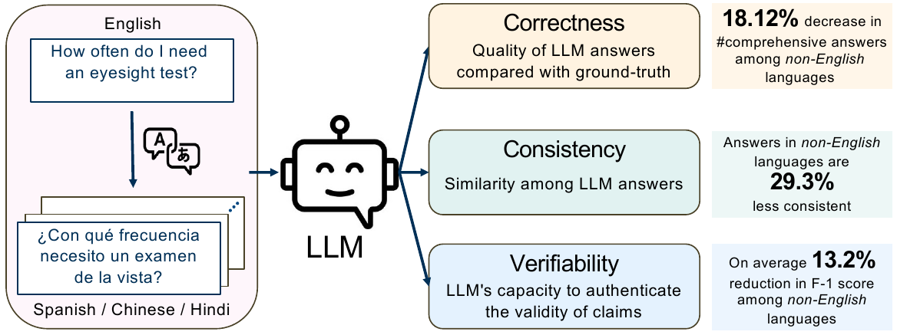
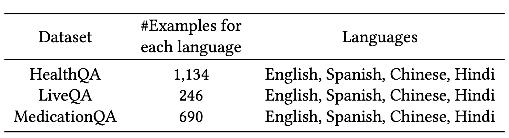
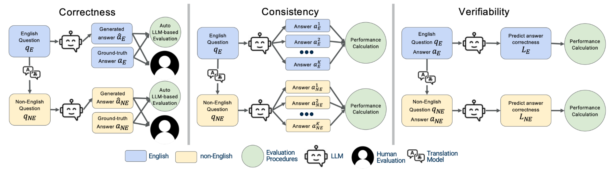
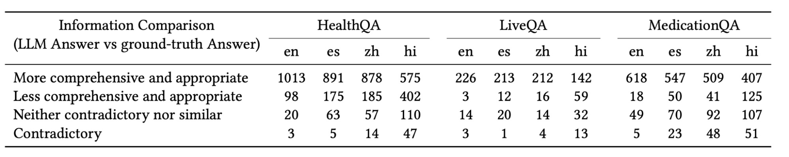
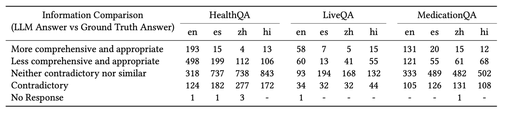
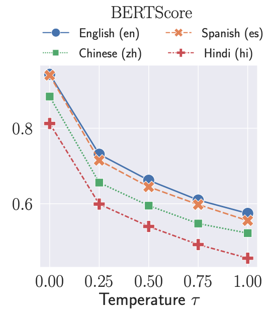
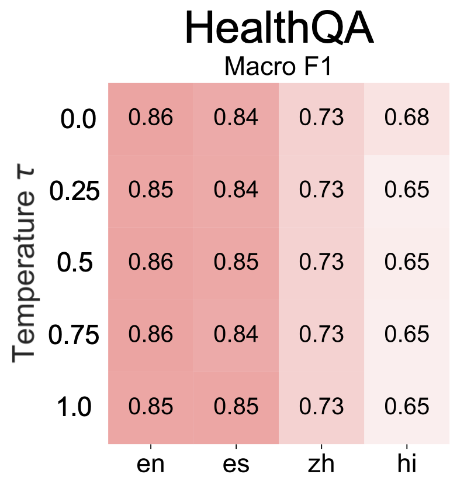
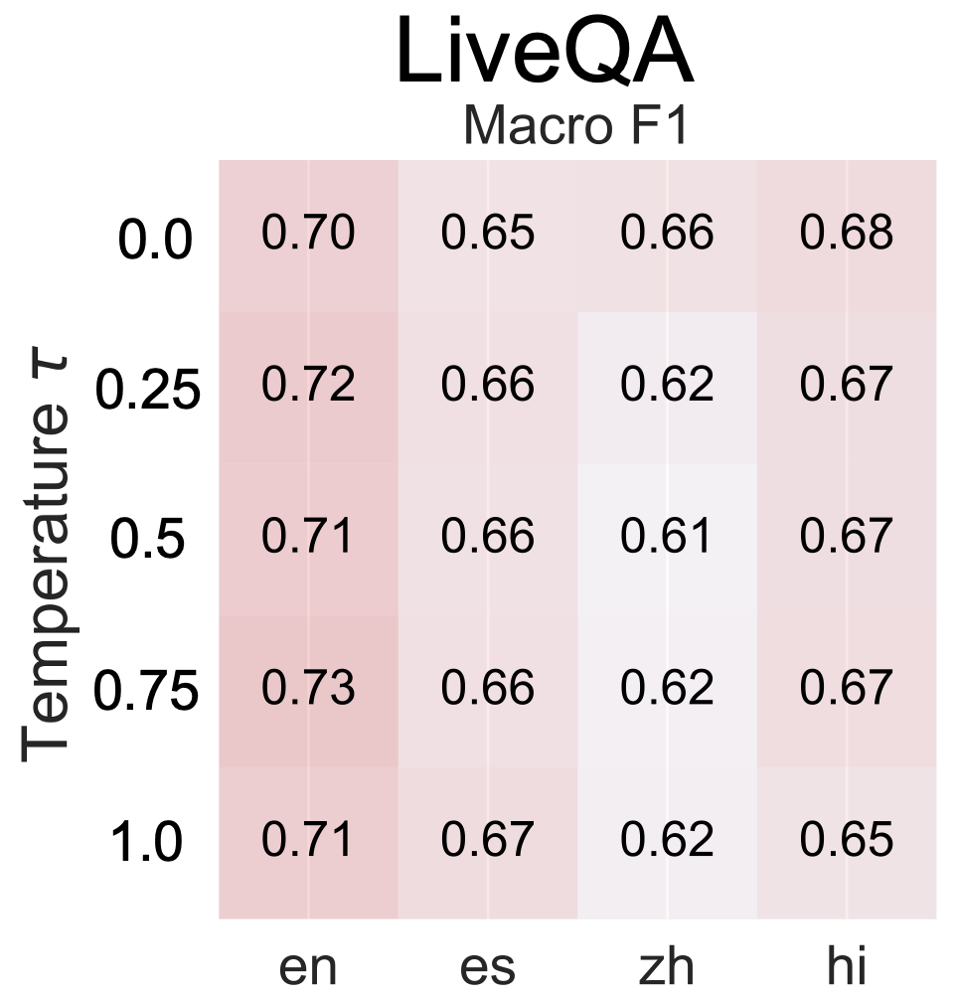
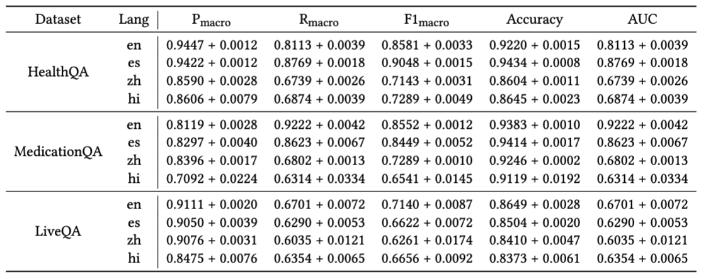

* Equal contribution
Proceedings of the ACM Web Conference 2024 (WWW '24) · May 13–17, 2024 · Singapore
Large language models (LLMs) are transforming the ways the general public accesses and consumes information. Their influence is particularly pronounced in pivotal sectors like healthcare, where lay individuals are increasingly appropriating LLMs as conversational agents for everyday queries. While LLMs demonstrate impressive language understanding and generation proficiencies, concerns regarding their safety remain paramount in these high-stake domains. Moreover, the development of LLMs is disproportionately focused on English. It remains unclear how these LLMs perform in the context of non-English languages, a gap that is critical for ensuring equity in the real-world use of these systems. This paper provides a framework to investigate the effectiveness of LLMs as multi-lingual dialogue systems for healthcare queries. Our empirically-derived framework XLingEval focuses on three fundamental criteria for evaluating LLM responses to naturalistic human-authored health-related questions: correctness, consistency, and verifiability. Through extensive experiments on four major global languages, including English, Spanish, Chinese, and Hindi, spanning three expert-annotated large health Q&A datasets, and through an amalgamation of algorithmic and human-evaluation strategies, we found a pronounced disparity in LLM responses across these languages, indicating a need for enhanced cross-lingual capabilities. We further propose XLingHealth, a cross-lingual benchmark for examining the multilingual capabilities of LLMs in the healthcare context. Our findings underscore the pressing need to bolster the cross-lingual capacities of these models, and to provide an equitable information ecosystem accessible to all.

A unified framework that evaluates LLMs along three healthcare-critical axes: correctness, consistency, and verifiability — combining algorithmic metrics with expert human evaluation. The framework provides a reproducible methodology applicable to any multilingual LLM deployment.
The first cross-lingual healthcare benchmark, spanning four major world languages — English, Spanish, Chinese, and Hindi — over three expert-annotated Q&A datasets: HealthQA, LiveQA, and MedicationQA. Professionally translated with rigorous quality controls.
Comprehensive evidence that LLMs are markedly less safe and reliable in non-English healthcare conversations, with the largest gaps in Hindi and Chinese — calling for equitable, language-aware LLM development and policy reform.

XLingHealth is the first benchmark purpose-built for evaluating multilingual LLM behavior in healthcare. It unifies three established expert-annotated Q&A corpora, each covering a different facet of consumer health information-seeking.
1,134 dev-set Q&A pairs sourced from Patient.info, covering diverse consumer health topics across primary care and specialty medicine.
246 consumer health Q&A pairs collected from NIH-affiliated trusted platforms, reflecting real-world health questions submitted by the public.
690 drug-related queries submitted to MedlinePlus, paired with reference answers drawn from authoritative medical references.

Compare LLM responses against expert ground-truth answers using both LLM-judge comparative analysis (with chain-of-thought prompting) and human evaluation by medical annotators across all four languages. Responses are categorized along a four-point scale from comprehensive and appropriate to incorrect or misleading, enabling fine-grained cross-lingual comparison.
Vary the sampling temperature τ and probe whether the model produces stable answers to the same question, scoring at the surface (n-gram overlap, response length), semantic (BERTScore, sentence-embedding similarity) and topic (LDA, HDP) levels. Consistency across sampling runs serves as a proxy for model reliability and confidence calibration.
Cast the LLM as a discriminator that must authenticate medical claims, measuring macro-precision, macro-recall, macro-F1, accuracy, and AUC over correct versus incorrect or irrelevant answer pairs. This axis tests whether the model can distinguish trustworthy from untrustworthy health information — a critical safety property for deployment.
GPT-3.5 produces 18.12% fewer comprehensive and appropriate answers and is 5.82× more likely to give an incorrect response in non-English languages. The performance degradation persists for the open-source MedAlpaca model, indicating the gap is not model-specific but reflects a systemic bias in LLM training toward English-language data.


Compared with English, semantic consistency drops by 9.1% in Spanish, 28.3% in Chinese, and 50.5% in Hindi. This gradient tracks the relative representation of each language in LLM pretraining corpora and suggests that non-English speakers receive less predictable, less stable healthcare information — with Hindi speakers facing the steepest reliability penalty.

GPT-3.5 reaches Macro-F1 ≈ 0.85 on HealthQA in English and Spanish but only ≈ 0.73 and ≈ 0.65 in Chinese and Hindi respectively — drops of 14.6% and 23.4%. The model's ability to distinguish trustworthy from untrustworthy medical claims deteriorates markedly as language resource availability decreases, posing a direct patient safety concern.



Healthcare information delivered by LLMs is not equally trustworthy across languages, putting non-English speakers at systematically higher risk of receiving incorrect, inconsistent, or unverifiable medical guidance — a direct equity and patient safety concern.
The disparity tracks pretraining corpus composition: LLMs are disproportionately trained on English text, with limited exposure to nuanced medical content in other languages. Addressing the gap requires deliberate multilingual data curation and evaluation-driven fine-tuning.
The correctness / consistency / verifiability lens introduced by XLingEval applies directly to other high-stakes multilingual dialogue domains — legal advice, financial guidance, and educational tutoring — wherever language-based inequity can cause real-world harm.
@inproceedings{jin2024better,
title={Better to ask in english: Cross-lingual evaluation of large language models for healthcare queries},
author={Jin, Yiqiao and Chandra, Mohit and Verma, Gaurav and Hu, Yibo and De Choudhury, Munmun and Kumar, Srijan},
booktitle={Proceedings of the ACM Web Conference 2024},
pages={2627--2638},
year={2024}
}